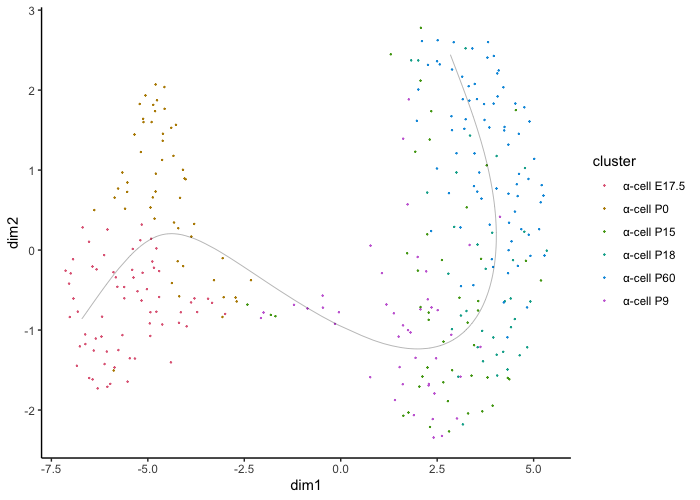

Slingshot Trajectory Inference
Connor H Knight
11/08/2021
trajectory.RmdTrajectory Inference Tutorial
Trajectory inference analysis calculates the developmental trajectory of cells. Slingshot offers a great algorithm providing: the trajectory of clusters and the pseudotime of the cells, .i.e. how long in the development the cell is.
For this tutorial we will observe the developmental trajectory of alpha cells in the pancreas. You can download this data using the following link:
https://www.dropbox.com/s/qs3pp0aq0t2voyz/trajectory_alpha_cells.rds?dl=0
traj_data <- readRDS(file.choose())We can now use slingshot to determine the developmental trajectory of the cells in our sample after some pre-processing:
traj <- createIBRAPobject(counts = t(traj_data$counts),
original.project = 'zhang',
meta.data = traj_data$metadata,
min.cells = 0,
min.features = 0)
traj <- perform.sct(object = traj,
assay = 'RAW',
slot = 'counts')
traj <- perform.pca(object = traj,
assay = 'SCT',
n.pcs = 50, reduction.save = 'pca')
traj <- perform.umap(object = traj,
assay = 'SCT',
reduction = 'pca',
n_components = 3,
n.dims = list(1:10))
traj_res <- perform.slingshot.trajectory(object = traj, reduction = 'pca_umap',
assay = 'SCT', clust.method = 'metadata',
column = 'celltype')
Now that we have our results, we can visualise them.
We can start on a basic level just showing the trajectory and cluster assignments:
plot.slingshot(result = traj_red, assay = 'SCT', relevant = F, Pseudotime = F)
Pseudotime is also calculated by slignshot and can be projected. The higher the value, the further along the developmental trajectory the cell is.
plot.slingshot(result = traj_red, assay = 'SCT', relevant = F, Pseudotime = T)
Finally, we can also include gene expression on our cell points to understand the difference in expression across development.
plot.slingshot(result = traj_red, assay = 'SCT', relevant = F, Pseudotime = F, object = traj, Expression = T, slot = 'normalised', feature = 'Gcg')